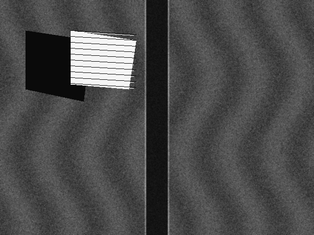

AI-Powered
Underwater Debris
Detection
Transforming Side-Scan Sonar imagery into actionable intelligence for cleaner and safer oceans. AquaNex AI automatically identifies ghost nets, plastics, pipes, and toxic canisters while discerning them from natural seabed geology.
Full Marine AI Pipeline
Seamlessly transitioning from raw slant-range acoustic backscatter to precision geo-targeted cleanup mobilization.
Marine Command Center
ALL SYSTEMS NOMINALReal-time autonomous acoustic surveillance, side-scan sonar interpretation, and marine debris tracking across continental shelf survey sectors.
Recent Debris Detections
| Target ID | Object Type | Risk | Confidence | Coordinates | Action |
|---|---|---|---|---|---|
| DET-001 | Ghost Net | High | 96.4% | 15.6234° N, 80.2312° E | |
| DET-002 | Underwater Pipe | Medium | 91.8% | 16.1042° N, 81.4519° E | |
| DET-004 | Tire Cluster | High | 93.5% | 17.6868° N, 83.2185° E | |
| DET-003 | Unknown Anomaly | Review | 84.2% | 15.1120° N, 80.7421° E |
AI Pipeline Status
Acoustic Sonar Detection Workspace
U-Net: Boundary Mask
Faster R-CNN: High-Accuracy Verification
Seafloor appears clear of high-risk anthropogenic debris. Acoustic backscatter analysis indicates uniform sediment with natural sand ripple topography. No acoustic shadow anomalies or synthetic marine debris located.

Ghost Net
HIGHHigh — Immediate entanglement hazard to marine wildlife (sea turtles, marine mammals) and bottom trawler snagging.
YOLO Detection vs U-Net Segmentation
Compare fast object bounding box localization against pixel-level acoustic boundary segmentation. Drag the slider to evaluate boundary delineation across complex acoustic backscatter.
YOLO identifies WHAT the object is and WHERE it is located.
- • Real-time inference: ~24.8ms per acoustic swath
- • Output: Class identifier + 2D Bounding Coordinates + Confidence
- • Strength: High-speed anomaly tagging across large oceanic surveys
U-Net identifies the EXACT PIXELS and BOUNDARIES of the object.
- • Pixel-accurate Dice Coefficient: 0.932 (IoU: 0.874)
- • Output: Binary / multiclass segmentation mask contour
- • Strength: Crucial for calculating ROV cutting arm geometry & debris volume
Ocean Geospatial Debris Tracking Map
Detection History & Survey Archives
| Detection ID | Object Type | Confidence | Risk Level | Coordinates (GPS) | Survey Date | Status | Action |
|---|
Marine Intelligence & Actionable Reports
Export standardized operational reports for salvage vessels, environmental agencies, and Smart India Hackathon jury review.
CSV Marine Dataset
Full tabular export containing Detection IDs, classifications, bounding dimensions, water depths, GPS coordinates, and validation scores.
GeoJSON Spatial Export
Standardized GIS GeoJSON FeatureCollection compatible with QGIS, ArcGIS, Google Earth, and autonomous AUV waypoint planners.
Official PDF Report
High-fidelity intelligence document with executive overview, environmental risk breakdown, target logs, and response team procedures.
Acoustic AI Architecture & Models
Deep learning models specialized in side-scan sonar acoustic backscatter interpretation, speckle noise invariance, and multi-stage verification.
AquaNex Marine YOLO11
Real custom-trained YOLO11 model detecting underwater ghost gear, plastics, and debris using acoustic backscatter highlights and shadow projection.
U-Net ResNet-50
Delineates precise tangled netting boundaries, filament extremities, and physical volume required for robotic arm cutting and extraction.
Faster R-CNN
Acts as secondary auditor to eliminate false positives triggered by complex natural sand ripples or geological rock formations.
AquaNex Marine YOLO11 Sonar Dataset
Normalized YOLO Format • marine_debris_dataset/ (data.yaml)
Bottles, containers, plastic fragments.
Ghost nets, ropes, longlines, filaments.
Metal sheets, pipes, cans, machinery.
Logs, timber, submerged wooden structures.
Tires and toxic vulcanized rubber objects.
Glass bottles, jars, inorganic containers.
Traps, subsea buoys, crab cages.
Vessel fragments, shipwreck wreckage.
Other artificial anthropogenic objects.
Suspicious target requiring verification.
marine_debris_dataset/
├── data.yaml # 10 Classes & dataset specification
├── train/
│ ├── images/ # 60 authentic sonar frames (.png)
│ └── labels/ # 60 YOLO annotation files (.txt)
├── valid/
│ ├── images/ # 20 validation sonar frames
│ └── labels/ # 20 validation labels
└── test/
├── images/ # 20 unseen test sonar frames
└── labels/ # 20 test evaluation labels
backend/models/best.pt
The application service layer (js/realSonarAnalyzer.js) communicates directly with the live FastAPI Python backend on port 8000:
🌊 Ocean Conservation Impact
CLASS AAA ECO-INTELLIGENCEQuantifying tangible marine ecosystem restoration: ghost net extraction tonnage, endangered marine wildlife threat mitigation, and microplastic prevention.
Targeted Wildlife Risk Mitigation
Ghost gillnets cause fatal entanglement during breeding migration. AquaNex AI detected 12 active trawl obstructions in nesting transects.
Abandoned nylon monofilament causes fin lacerations and echolocation disorientation. 4 locations marked for rapid diver removal.
Heavy trawler cables smother and shatter fragile calcified colonies. Slant-range sonar maps allow surgical ROV detachment.